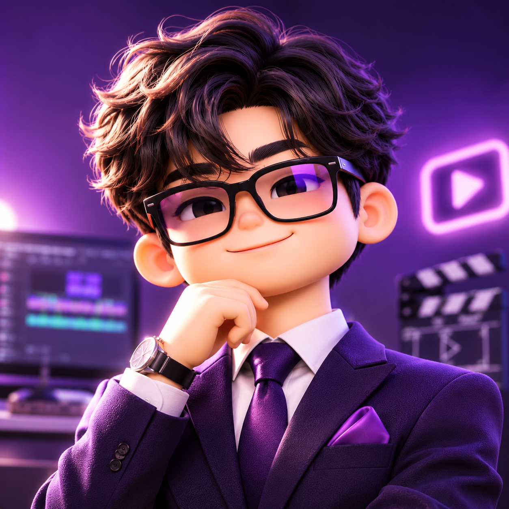

01CONCEPT
이야기의 시작
어린 선비가 유리병 속 초대장을 따라 부산 동구의 시간을 여행하는 이야기.
DIRECTOR’S STUDIO / PORTFOLIO 2026
영상 제작자 · 영상 편집자 · 콘텐츠 마케터
현장에서 포착한 이야기를, 오래 남는 콘텐츠로.
촬영 · 편집 · 드론 · AI 연출로 브랜드의 메시지를 완성합니다.
MINZ / INTERACTIVE VIEWFINDER
관심 직무를 선택하고 대표 프로젝트를 만나보세요.
현장 촬영부터 영상 편집까지.
SELECTED / 03 PROJECTSMEET THE CREATOR / 2026
생각을 장면으로, 장면을 이야기로.
30초에 담아낸 저의 크리에이티브 여정입니다.
DIRECTING · FILMING · DRONE · EDITING
봉산마을 관광 콘텐츠 제작지원
짱구 팝업스토어 릴스 조회수
블로그 콘텐츠 운영 경험
01 / DIRECTOR’S SELECT
세 개의 장면으로 만나는 MINZ의 시선.
프로젝트를 선택하면 대표 장면과 제작 이야기를 확인할 수 있습니다.
AI / CINEMATIC STORY
어린 선비의 시선으로 부산 동구를 여행하는 AI 시네마틱 스토리.
기획 · 촬영 · AI 연출 · 편집
제작 과정 살펴보기BEHIND THE FRAME / DIRECTOR'S NOTES
기획 의도부터 제작 과정, 결과까지. 작품을 만드는 방식도 보여줍니다.
어린 선비가 유리병 속 초대장을 따라 부산 동구의 시간을 여행하는 이야기.
기획·실사 촬영·AI 연출·편집을 연결하는 제작 과정.
부산 동구 AI 영상 공모전 출품 완료 · 심사 결과 대기 중.
PROJECT NOTES 실제 수행 내용과 확인된 결과만 기록했습니다.
02 / SELECTED PROJECTS
현장에서 만든 결과를 영상으로 확인하세요.
썸네일을 누르면 바로 재생됩니다.
03 / CREATIVE DESIGN — 2 PROJECTS
영상 너머, 메시지를 시각적으로 설계하다.
정보 콘텐츠와 웹 UI 디자인의 두 가지 접근을 소개합니다.
포토샵으로 기획·제작한 6장 정보 콘텐츠를 생성형 AI 기반 비주얼 작업으로 확장했습니다. 원본부터 리디자인까지 제작 과정을 비교해 볼 수 있습니다.

제품 탐색 동선과 메인 화면 구성, 색상·타이포그래피 가이드를 정리한 비공식 개인 리디자인 작업입니다.
DESIGN PROCESS / 01—03
직접 만든 디자인을 AI로 한 번 더 발전시키다.
결과만이 아닌 제작의 흐름을 보여줍니다.
콘텐츠 구성, 카피, 이미지 편집과 타이포그래피 설계
기존 메시지를 바탕으로 비주얼 표현과 연출 방식 탐색
정보 전달력과 전체 시리즈의 시각적 일관성 보완
01 / 06

MY ROLE 콘텐츠 기획 · Photoshop 디자인 · AI 비주얼 리디자인 TOOLS Adobe Photoshop · Generative AI
* SONY 리디자인은 브랜드 공식 의뢰가 아닌 개인 디자인 프로젝트이며, 썸네일은 실제 Figma 프로젝트의 목업 이미지를 사용했습니다.
04 / PRODUCTION EXPERIENCE
사람의 이야기를 듣고, 콘텐츠를 기획하며, 현장에서 완성해온 경험입니다.
FEATURED ACHIEVEMENT / 2026
200만 원 제작지원 선정 프로젝트에 참여해 기획 과정에 의견을 보태고, 현장·드론 촬영과 롱폼·숏폼 편집을 중심으로 담당했습니다.
참여 프로젝트 · 제작지원 선정
BUSAN · YEONGDO / 2026SELECTED CASE STUDIES / ROLE & PROCESS
지역의 매력을 짧은 영상 속에서 전달하는 홍보 콘텐츠. 결과 영상뿐 아니라 전달 목적과 장면 구성의 관점에서 작업을 소개합니다.
※ 최종 면접 진출은 개인 취업 경험이며, 홍보영상의 공식 성과를 뜻하지 않습니다.
관광 콘텐츠 제작지원 선정 프로젝트. 현장 경험을 바탕으로 지역 공간의 분위기와 이야기를 영상으로 전달했습니다.
※ 전체 프로젝트 기획 총괄이 아닌 기획 참여와 촬영·편집 중심의 담당 범위를 명시했습니다.
작품 상세 과정은 실제 제작 자료가 확인되는 범위에서 보강하며, 사용하지 않은 도구나 검증되지 않은 성과는 표기하지 않습니다.
지역·브랜드 홍보영상과 SNS 숏폼을 기획·촬영·편집하고, YouTube 채널을 운영합니다.
@minz_log를 통해 부산 맛집·핫플·지역 정보를 전달하고 브랜드 협업 콘텐츠를 제작합니다.
상담 현장에서 쌓은 소통과 요구 분석 경험을 인터뷰 구성·콘텐츠 기획 역량에 연결합니다.
부산 드론 수색 활동에 참여하며, 초경량비행장치 조종자 1종 자격을 보유하고 있습니다.
맛집·여행·지역 정보를 짧고 명확한 영상 콘텐츠로 전달합니다.
부산 지역 콘텐츠를 제작하고 다양한 홍보 활동에 참여했습니다.
생활권 기반의 정보와 지역 콘텐츠를 소개하는 활동을 진행했습니다.

MEET THE CREATOR / MINZ05 / ABOUT MINZ
신문방송학 전공을 바탕으로 영상 기획·촬영·편집과 콘텐츠 마케팅을 연결합니다. 인스타그램 @minz_log에서 부산의 맛집·핫플을 소개하며 브랜드 협업 릴스부터 지역 홍보영상, AI 콘텐츠까지 목적에 맞게 제작합니다.
Premiere Pro · After Effects · Photoshop · Illustrator · Drone · Generative AI
LET'S COLLABORATE ↗06 / GET IN TOUCH
브랜드 홍보영상 · 드론 촬영 · AI 콘텐츠 · SNS 마케팅